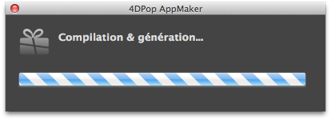

4DPop AppMaker |
|
|
|
||||
4DPop AppMaker is an helper tool for the generation of application and / or component. It allows, after setting, with just one click, generate your application or your component and perform a number of tedious, repetitive tasks.
| 1. | Create a folder "Components" beside the structure file of your database (".4db") |
| 2. | Place the folder "4DPop AppMAker.4dbase"* or an alias of the folder into the "Components" folder |
| 3. | Open your database. |
| 4. | If the componant 4DPop is installed a new button "AppMaker" will appear in the tool bar. |
*On Macintosh, the component is a package with a ".4dbase" extension and could not be visible depending on your display settings.
Click on the button "AppMaker" in the 4DPop's palette will start the compilation and generation of the current database taking into account the parameters defined in the current project (the file ~/myBase.4dbase/Preference/BuildApp/BuildApp.xml).

If this shortcut is already appreciable, the component also automates the tasks we have to repeat before and after each release.
You can access to parameters of "4DPop AppMaker" through the menu associated with the 4DPop palette's button (displayed by clicking on the arrow or with a long click). The menu offers two choices:
• The first page allow to start the generation when the settings were changed. Just click the big button, the action is equivalent to a single click on the button of the pallet. |
|
| • The second page allows you to fill the XML keys of the current file BuildApp.XML.
(~/myBase.4dbase/Preference/BuildApp/BuildApp.xml)
For each XML key listed on the left, the description is presented in the upper right part with an indication of the relevant platform(s) as icons . If the parameter has a meaning for the current platform, it is possible to change its value in the lower right panel. If the key is not relevant for the current platform, the data are displayed but not editable. A padlock symbol is displayed into the help area. The XML keys are underlined if there is data. To delete a key, you must click on the label holding the Option key on Mac (Alt on PC). Reference : 4D Clés XML BuildApplication |
|
• The page "Preparations" allow to enter the name of a method of your database that will be run before compilation and generation. This method must return True if the generation process can continue. If the method returns False, the generation is canceled. Remember to declare your method "Shared between components and host database". The key/value pairs listed in the table allow you enter information which will be included in the file infoplist.strings (generated in all the language folders). On Macintosh, this file is used with the info.plist file in the root of the package. These two files allow to display the informations about the package.
|
 |
| • The page "Finishes" is used to specify files/folders to be copied or to be removed from the package after generation. The default generation done by 4D copies the file "mabase.4DC" and the folder "resources" but ignores some useful files. So we must integrate files by hand like the file "mabase.htm" for the help file or the folder "Macros v2" for exemble. Similarly the folder "resources" is entirety copied. You may want to delete from the released version the files or folders that only concerns the development stage.
You can also, on this page, enter the name of a method of your database to be launched at the end of the process. Again, remember to check"Shared between components and host database" |
|
• The last page is for setting some options:
|
Several methods are shared by the component.
These are utilities or entry points to be used by your database (principaly in the methods that are executed before and after generation if any).
These methods will be documented later. Here's a list:
Note: It is best to call these methods with the command EXECUTE METHOD in order to allow remove the component 4DPop AppMaker from your distributed database.
This component is provided in compiled version but you can find the source code in the "SOURCES" folder that is located inside the component folder.